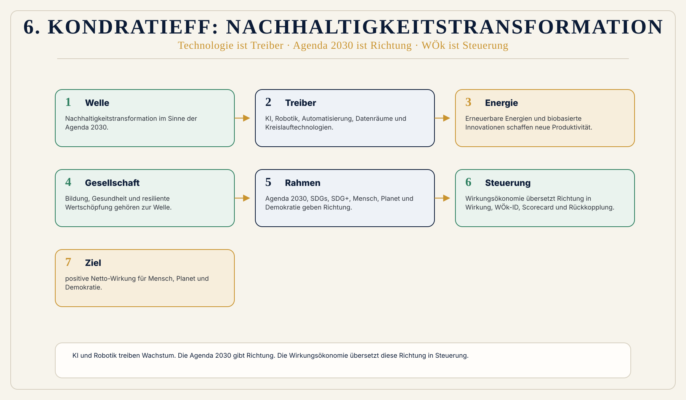

Daten anschließen
SDGs, CSRD, ESRS, GRI, EU-Taxonomie, NACE, digitale Produktpässe, Lieferketten- und Produktdaten.
 Wirkungsökonomie
Wirkungsökonomie
Wissen · Transformation
Warum die Nachhaltigkeitstransformation neue technologische Treiber und eine neue Steuerungslogik braucht
Wirtschaft entwickelt sich nicht gleichmäßig. Sie bewegt sich in langen Wellen: neue Technologien, neue Infrastrukturen, neue Märkte und neue gesellschaftliche Bedürfnisse verändern, was als Fortschritt gilt.
Die These dieser Seite lautet: Die nächste große Welle ist nicht einfach Digitalisierung. Sie ist Nachhaltigkeitstransformation.
Doch diese Transformation entsteht nicht allein durch grüne Technologien, neue Produkte oder mehr Reporting. KI, Robotik, Automatisierung, Datenräume, erneuerbare Energien und Kreislauftechnologien können Wachstum treiben. Ob sie positive oder negative Wirkung entfalten, entscheidet die Steuerungslogik.
Genau hier setzt die Wirkungsökonomie an. Sie macht Wirkung sichtbar, bewertet sie am Referenzrahmen der SDGs, der Agenda 2030 und SDG+ - und koppelt diese Bewertung in Preise, Steuern, Kapital, Unternehmen, öffentliche Haushalte und politische Entscheidungen zurück.

Kurzantwort
Frühere Wellen wurden etwa durch Dampfmaschine, Eisenbahn, Elektrizität, Automobil, Chemie, Digitalisierung und Globalisierung getragen. Die 6. Welle wird hier als Nachhaltigkeitstransformation im Sinne der Agenda 2030 verstanden.
KI, Robotik, Automatisierung, Datenräume, Kreislaufwirtschaft, erneuerbare Energien, biobasierte Innovationen, Bildung, Gesundheit und resiliente Wertschöpfung sind wichtige Wachstumstreiber innerhalb dieser Welle. Sie sind aber nicht selbst der Kompass.
Die Wirkungsökonomie geht einen Schritt weiter: Diese neue Welle braucht nicht nur neue Technologien, sondern eine neue ökonomische Steuerungslogik. Nicht mehr Kapital oder technische Produktivität allein entscheiden, was wächst. Sondern positive Netto-Wirkung für Mensch, Planet und Demokratie.
Grundlage
Kondratieff-Zyklen sind ein wirtschaftshistorisches Modell langer Entwicklungswellen. Sie beschreiben, dass wirtschaftliche Dynamik über Jahrzehnte hinweg von bestimmten Basisinnovationen, Infrastrukturen und Leitlogiken geprägt wird.
Das Modell ist keine exakte Naturwissenschaft. Es erklärt nicht jede Krise, jeden Markt und jede Entwicklung vollständig. Aber es hilft, große historische Muster sichtbar zu machen: Eine neue Technologie entsteht, verändert Produktion, Energie, Kommunikation oder Organisation, richtet Unternehmen, Kapital und Politik neu aus und bildet schrittweise eine neue ökonomische Normalität.
So betrachtet sind Kondratieff-Wellen keine starren Zeitpläne, sondern Deutungsräume. Sie zeigen, welche Kräfte eine Epoche tragen.
Überblick
| Welle | Leitlogik | Treiber | Gesellschaftliche Wirkung |
|---|---|---|---|
| 1.-2. Kondratieff | Industrialisierung und Kostenreduktion | Dampfmaschine, Eisenbahn, Stahl | Produktion, Infrastruktur, industrielle Märkte |
| 3.-4. Kondratieff | Massenproduktion und Konsum | Elektrizität, Chemie, Automobil, Massenmärkte | Wohlstand, Konsumgesellschaft, Skaleneffekte |
| 5. Kondratieff | Digitalisierung und Effizienz | IT, Kommunikation, Globalisierung, Lean Management | Vernetzung, Plattformen, Daten, globale Lieferketten |
| 6. Kondratieff | Nachhaltigkeitstransformation im Sinne der Agenda 2030 | KI, Robotik, Automatisierung, Datenräume, Kreislaufwirtschaft, erneuerbare Energien, biobasierte Innovationen, Bildung, Gesundheit, resiliente Wertschöpfung | Wirkung als Steuerungs- und Rückkopplungslogik |
Die entscheidende Verschiebung liegt nicht nur in der Technologie. Sie liegt im Maßstab. Frühere Wellen fragten vor allem: Wie produzieren wir mehr, billiger, effizienter und schneller? Die neue Welle fragt: Welche Wirkung entsteht für Menschen, den Planeten und Demokratie?
Leitwelle
Nachhaltigkeit ist längst kein Nischenthema mehr. Sie betrifft Energie, Industrie, Landwirtschaft, Mobilität, Bauen, Wohnen, Ernährung, Kapitalmärkte, öffentliche Haushalte, Lieferketten, Digitalisierung, Gesundheit und Demokratie.
Das ist der entscheidende Unterschied: Nachhaltigkeit ist nicht ein weiterer Sektor. Sie ist eine neue Bedingung für alle Sektoren.
Ein Energiesystem ohne Klimastabilität ist nicht zukunftsfähig. Ein Finanzsystem ohne Wirkungstransparenz wird risikoblind. Ein Unternehmen ohne Lieferkettenkenntnis verliert Resilienz. Ein Staat, der Folgekosten nicht einpreist, wird zur Reparaturmaschine. Eine Demokratie ohne verlässliche Öffentlichkeit verliert Korrekturfähigkeit.
Nachhaltigkeit ist deshalb nicht einfach eine Strategie. Sie ist Systemarchitektur.
Genau diese These ist zentral: Nachhaltigkeit bleibt im kapitalszentrierten Steuerungsmodell strukturell unterbestimmt, solange sie nur als Zusatz, Risikofaktor, Reputationsvariable oder Reportingpflicht behandelt wird. Sie wird erst wirksam, wenn sie in die Steuerungslogik selbst eingeht.
Treiber, Richtung, Steuerung
Die sechste wirtschaftliche Entwicklungswelle wird nicht allein von einer einzelnen Technologie getragen. KI, Robotik, Automatisierung, Datenräume, erneuerbare Energien, Kreislaufwirtschaft und biobasierte Innovationen sind wichtige Wachstumstreiber.
Doch der eigentliche Rahmen dieser Welle ist größer: die Nachhaltigkeitstransformation im Sinne der Agenda 2030. Sie umfasst nicht nur Klima und Ressourcen, sondern auch Bildung, Gesundheit, faire Arbeit, Diversität, resiliente Wertschöpfung, soziale Sicherheit, demokratische Stabilität und globale Partnerschaft.
Technologie liefert Produktivität. Nachhaltigkeit gibt Richtung. Die Wirkungsökonomie macht diese Richtung steuerbar.
Technikgrenze
Die 6. Welle wird oft mit Technologien verbunden: künstliche Intelligenz, Robotik, Automatisierung, erneuerbare Energien, Batterien, Wasserstoff, Kreislaufwirtschaft, digitale Produktpässe, klimaneutrale Gebäude, regenerative Landwirtschaft oder präventive Gesundheitssysteme.
All das ist wichtig. Aber Technik allein löst das Problem nicht.
Eine Solaranlage kann positive Wirkung erzeugen oder neue Rohstoff-, Lieferketten- und Flächenkonflikte verschärfen. Eine KI kann Prozesse verbessern oder Desinformation, Überwachung und Diskriminierung verstärken. Ein Nachhaltigkeitsbericht kann Transparenz schaffen oder wirkungslos bleiben, wenn er keine Preise, Steuern oder Investitionen verändert.
Die entscheidende Frage lautet deshalb nicht: Welche Technologie kommt? Sondern: In welche Steuerungslogik wird diese Technologie eingebettet?
Steuerungslogik
Die Wirkungsökonomie ist nicht die einzelne Anwendung. Sie ist die Grundlogik, die Daten, Bewertungen, Regeln, Kapital, Preise, Haushalte und Entscheidungen miteinander verbindet und Rückkopplung ermöglicht.
Genau so funktioniert die Wirkungsökonomie. Sie ist nicht einfach ein weiteres Nachhaltigkeitsmodell, nicht nur Reporting, nicht nur ESG, nicht nur Gemeinwohlbilanz und nicht nur politische Zielsetzung.
SDGs, CSRD, ESRS, GRI, EU-Taxonomie, NACE, digitale Produktpässe, Lieferketten- und Produktdaten.
Daten werden am Referenzrahmen SDGs, Agenda 2030 und SDG+ eingeordnet.
Reverse Merit Order und Wirkungsgrenzen verhindern, dass schwere Schäden schöngerechnet werden.
Wirkung wird in Preise, Steuern, Kapitalzugang, Beschaffung, Haushalte und Unternehmensentscheidungen zurückgeführt.
Evaluation, Transparenz, Wirkungsrat, Datenqualität, Korrektur und demokratische Kontrolle halten das System lernfähig.
Zielgröße ist positive Netto-Wirkung für Mensch, Planet und Demokratie, nicht Wachstum als Selbstzweck.
Rückkopplung
Heute entstehen immer mehr Nachhaltigkeitsdaten. Unternehmen erfassen Emissionen, Wasserverbrauch, Lieferkettenrisiken, Recyclingquoten, Arbeitsbedingungen, Diversität, Governance und weitere Kennzahlen. Doch viele dieser Daten bleiben in Berichten, Dashboards und Ratings hängen.
Die Wirkungsökonomie fragt deshalb: Was passiert mit diesen Daten? Werden sie nur berichtet? Oder verändern sie Preise, Steuern, Kapital, Beschaffung, Investitionen, Managemententscheidungen und öffentliche Haushalte?
Der entscheidende Satz lautet: Sichtbarkeit reicht nicht. Wirkung muss zurückgekoppelt werden.
Wachstum
Die Nachhaltigkeitstransformation ist nicht einfach Wachstum mit grüner Farbe. Sie verändert, was überhaupt als Leistung gilt.
Ein Unternehmen ist nicht zukunftsfähig, nur weil es wächst. Ein Staat ist nicht erfolgreich, nur weil er viel ausgibt. Ein Produkt ist nicht effizient, nur weil es billig ist. Ein Kapitalfluss ist nicht wertvoll, nur weil er Rendite erzeugt. Eine Innovation ist nicht gut, nur weil sie neu ist.
Entscheidend ist die Wirkung. Wachstum kann destruktiv sein, wenn es Ressourcen verbraucht, Ungleichheit verschärft oder Demokratie destabilisiert. Wachstum kann positiv sein, wenn es Gesundheit stärkt, Kreisläufe schließt, Emissionen senkt, Bildung verbessert, Resilienz erhöht oder demokratische Handlungsfähigkeit stärkt.
Die Wirkungsökonomie unterscheidet deshalb nicht pauschal zwischen Wachstum und Nicht-Wachstum, sondern zwischen Scheinleistung, Blindleistung, Verlustleistung und Wirkleistung.
Diese Unterscheidung ist Teil der Maßstabs- und Leistungslogik: Die WÖk fragt nicht nur, ob Bewegung entsteht, sondern ob diese Bewegung reale positive Zustandsveränderung erzeugt.
Steuerung der Transformation
Die 6. Kondratieff-Welle braucht mehr als Technologien. Sie braucht eine Steuerungs- und Rückkopplungslogik, die fünf Aufgaben erfüllt.
Wirkung muss auf vorhandene Datenräume aufsetzen: SDGs, CSRD, ESRS, GRI, EU-Taxonomie, NACE, digitale Produktpässe, Lieferketten- und Produktdaten.
Daten allein sagen noch nicht, ob eine Veränderung positiv, negativ oder neutral ist. Dafür braucht es einen Referenzrahmen: SDGs, Agenda 2030 und SDG+.
Schwere negative Wirkungen dürfen nicht durch positive Einzelwerte schöngerechnet werden. Deshalb braucht es Reverse Merit Order und Wirkungsgrenzen.
Wirkung muss in Preise, Steuern, Kapitalzugang, öffentliche Beschaffung, Haushalte und Unternehmensentscheidungen zurückgeführt werden.
Wirkung ist nie vollständig sicher. Systeme verändern sich. Deshalb braucht es Evaluation, Transparenz, Wirkungsrat, Datenqualität, Korrektur und demokratische Kontrolle.
Abgrenzung
Kondratieff-Zyklen sind kein exakter Automatismus und keine feste Zukunftsprognose.
Technologien sind wichtig, aber ihre Wirkung hängt von Daten, Regeln, Kapital, Nutzung und Rückkopplung ab.
KI, Robotik und Automatisierung sind Wachstumstreiber innerhalb der Nachhaltigkeitstransformation, aber nicht der eigentliche Kompass und keine eigene Steuerungslogik.
Die Nachhaltigkeitstransformation entsteht nicht allein durch die Wirkungsökonomie. Die WÖk beschreibt eine mögliche Steuerungslogik.
Die Seite behauptet auch nicht, dass Technologie unwichtig ist. Sie fragt, in welche Steuerungslogik Technologien eingebettet werden.
Warum das zählt
Wenn die neue Welle nach alten Maßstäben gesteuert wird, entsteht ein Widerspruch. Unternehmen sollen nachhaltig werden, aber Preise belohnen weiter Externalisierung. Bürger:innen sollen verantwortlich konsumieren, aber schädliche Produkte bleiben billiger. Staaten sollen Klimaziele erreichen, aber Steuersysteme begünstigen alte Strukturen. Kapitalmärkte sollen Transformation finanzieren, aber Rendite bleibt vom Wirkungskontext entkoppelt.
Die Wirkungsökonomie setzt genau dort an. Sie verändert nicht nur einzelne Maßnahmen. Sie verändert die Steuerung: was gemessen wird, was als Erfolg gilt, was sich lohnt, was teurer wird, was gefördert wird, was Kapital erhält, was politisch sichtbar wird und was demokratisch geprüft wird.
Weiterführende Inhalte
Die Grundlogik von Wirkung, Wirkungspotenzial, Netto-Wirkung und Wirkungsrückkopplung.
Warum nicht Einzelwirkung, sondern Netto-Wirkung für Mensch, Planet und Demokratie entscheidend ist.
Wie Daten, Bewertung, Schutzregel, Wirkungsklasse und Rückkopplung verbunden werden.
Wie Wirkung digital vergleichbar, prüfbar und anschlussfähig wird.
Warum schwere negative Wirkung nicht durch positive Einzelwerte verdeckt werden darf.
Wie vorhandene Daten in Scorecards, Wirkungsklassen und Rückkopplung übersetzt werden.
Abgrenzung zu ESG, Gemeinwohlökonomie, Donut, Wellbeing Economy und Postwachstum.
Warum die WÖk kein Planwirtschaftsmodell ist, sondern Markt, Freiheit und Wirkung neu verbindet.
Der Evidenzraum der Wirkungsökonomie: Grundlagen, Standards, Daten und Quellenarchitektur.
Quellenhinweis
Diese Seite stützt sich intern auf den führenden Begriffsleitfaden, den aktuellen Buchstand, die Einordnung „Von Kapital zu Wirkung“, das Paper „Nachhaltigkeit ist keine Strategie. Sie ist eine Systemarchitektur“ und die technischen Leitlinien zur WÖk-Daten- und Scorecardlogik.
Externe Quellenbasis: Kondratieff zu langen Wellen, Schumpeter zu Innovation, Meadows zu Systemhebeln und Grenzen des Wachstums, UN Agenda 2030 / SDGs, CSRD / ESRS als Dateninfrastrukturbeispiele.
Siehe auch: Grundlagen und Denker, Nachhaltigkeit und SDGs, Regulatorik und Daten.